Gemini に描かせた見本です。どれも「情報を減らして、今日のタスクを片づけやすく」がねらい。絵の中の日本語は Gemini が崩しているので、雰囲気と並び方だけ見てください。
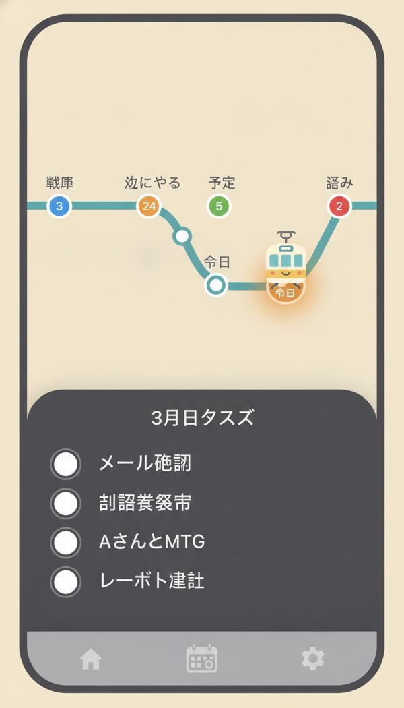
1本の線に「収集・次にやる・予定・今日・済み」の駅。駅の丸に件数、今日の駅に電車が止まっている。
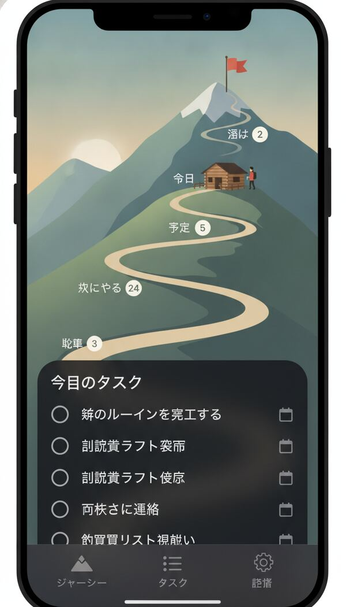
ふもと（収集）から道をのぼり、休けい所（次にやる・予定）、山小屋（今日）、頂上の旗（済み）へ。
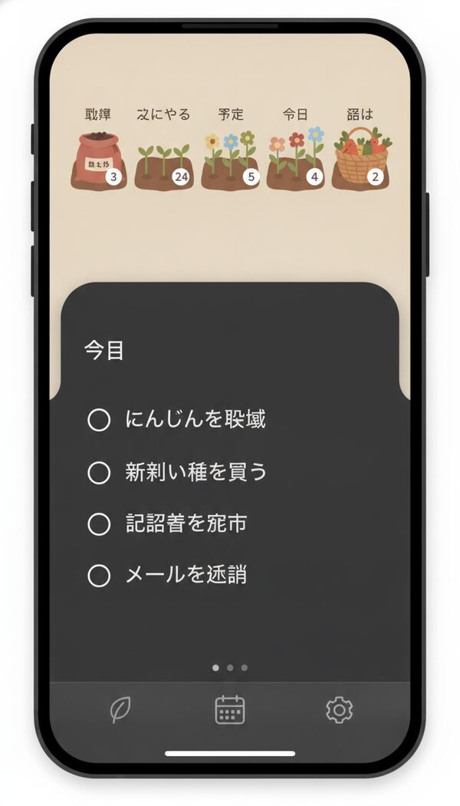
種袋（収集）→ 芽（次にやる）→ つぼみ（予定）→ 花（今日）→ 収穫かご（済み）が横に並び、件数つき。
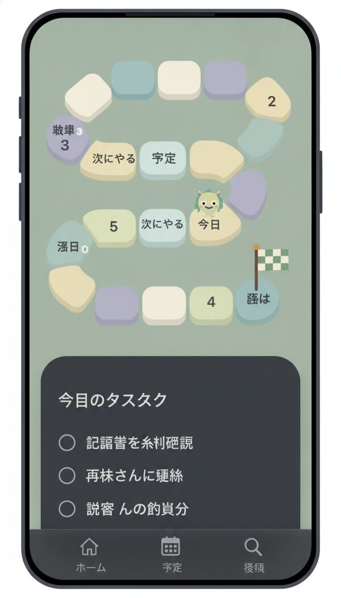
くねくねのマスに段の大きなマス、こまが今日に立っていて、ゴールの旗が済み。
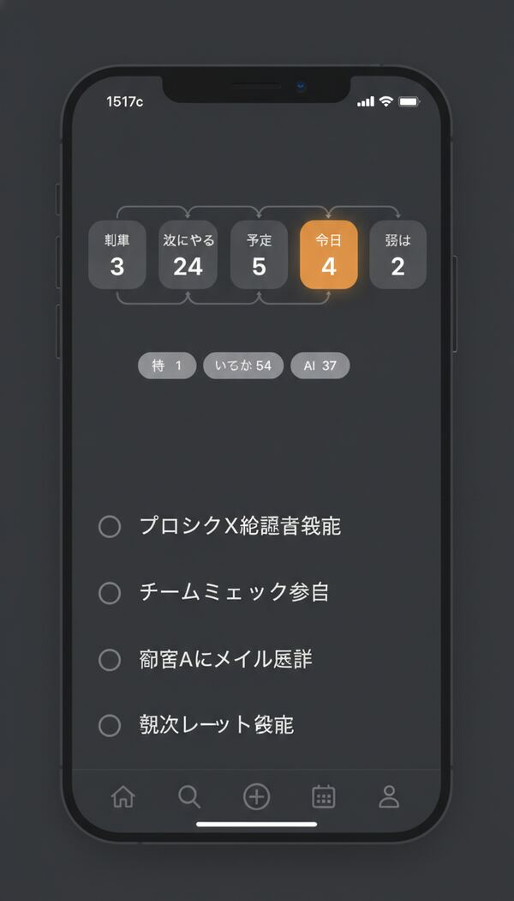
上に「収集 → 次にやる → 予定 → 今日 → 済み」の数字を一列、その下に待ち・いつか・AI。下半分は今日のタスク。段を押すとその一覧に切り替わる。
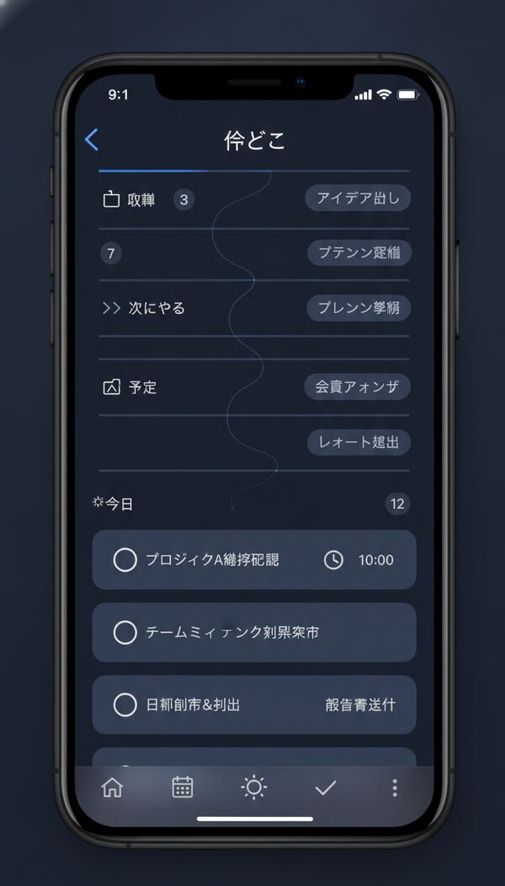
段を縦に並べ、各段は細い帯に件数と中身を少しだけ。今日の段だけ開いていて、ほかは押すと開く。
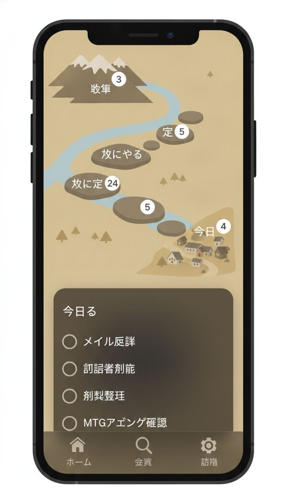
山（収集）から飛び石（次にやる・予定）を通って村（今日）へ流れる絵に件数。下に今日のタスク。
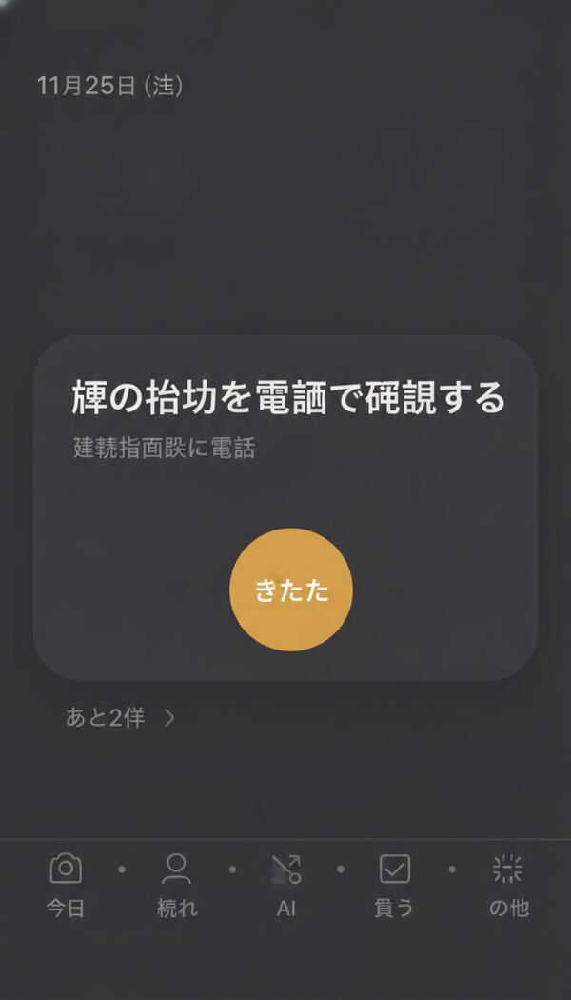
今日タブには、今やるタスクを1枚だけ大きく出す。「できた」を押すと次の1枚に替わる。
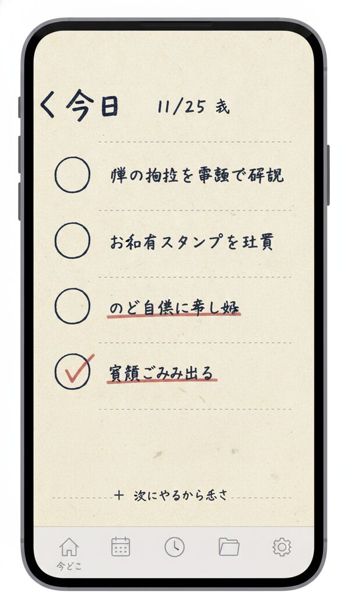
明るい紙の色に、手書きふうの見出しと丸いチェック。済んだものは線で消える。
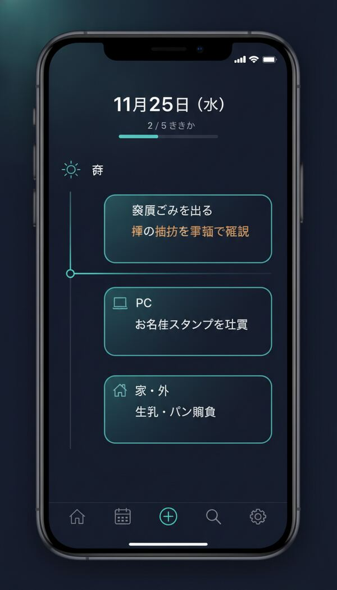
朝 → PC → 家・外 の枠を縦の線でつなぎ、今の時刻に印。上に「2 / 5 できた」の細い帯。
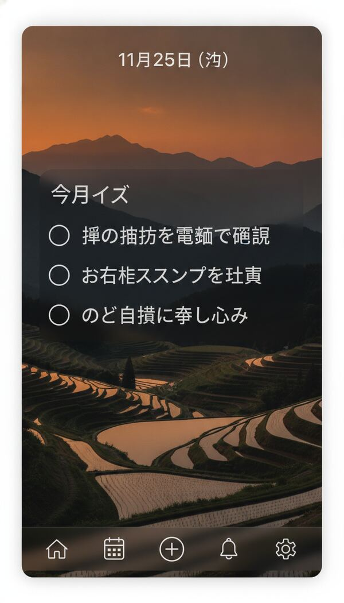
前に作った時間で変わる風景を背景に、すりガラスのカードで今日のタスクを3件ほど。
組み合わせもできます（例：A の「1件だけ」＋ D の風景、C の流れ＋ B の紙の色）。決まったら、今の今日タブ（一覧だけ）をその形に作り替えます。